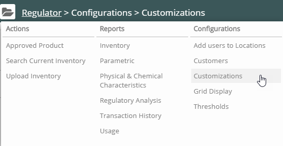
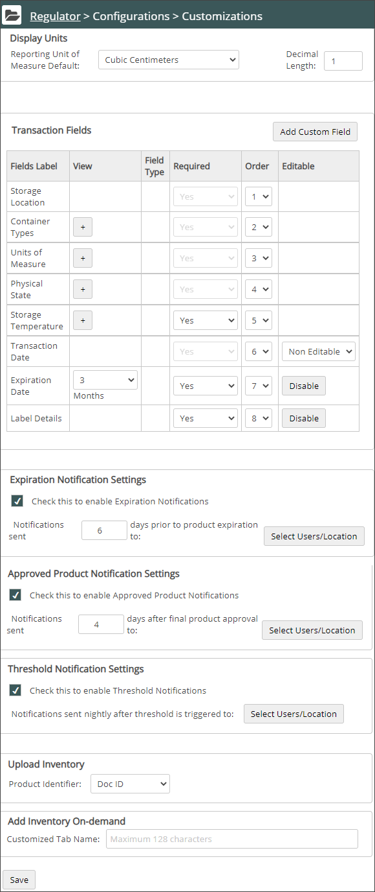
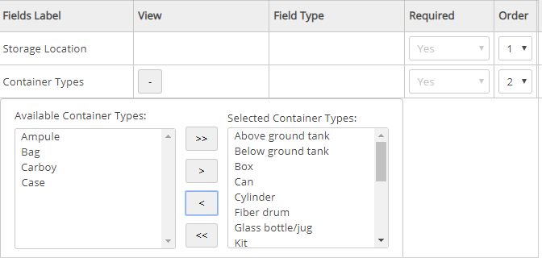
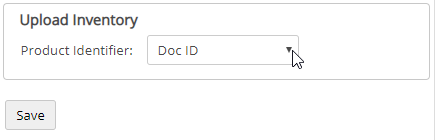
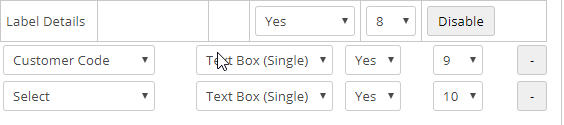
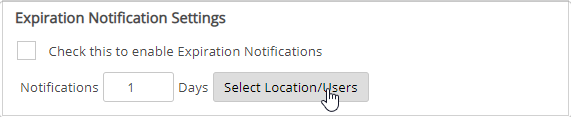
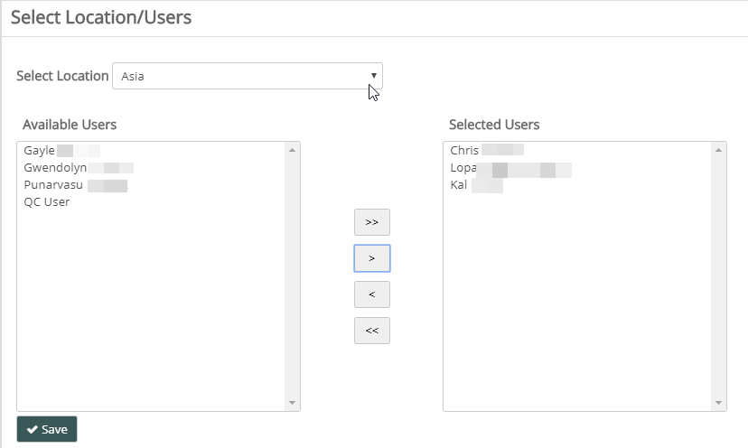

You can customize Regulator by controlling the fields users view on the Add Inventory page for the transaction.
To customize the Add Inventory Form:
Click Regulator Main Menu (). The Regulator navigation pane displays. Select Customizations from the Configurations list.

The Customizations page displays.

In the Display Units section at the top, choose a default unit of measure and the number of decimals that appear in reports.
In the Transaction Fields section, click the + sign to see the available options for each field.
For example, the Container Types field shows the available container types. Select the types from the Available Container Types section and add them to the Selected Container Types section using the arrow buttons. The selected options will be the container types visible to the user on the Add Inventory page.

Choose Required yes/no, for each field. Default is yes for all fields. Change to No if not required.
To control the display order of the fields, set the Order number.
Upload Inventory Product Identifier
This option determines how Regulator interprets entries in the batch upload spreadsheet. The default setting is Doc ID. If you have any custom codes configured in Vault, they also appear in the list. When uploading, Regulator interprets the Product Identifier column based on this setting.
Note: The Product Identifier ties the Regulator container to a Vault SDS. The default Doc ID is strongly recommended since it is unique.
To change the Product Identifier field used in uploading inventory:
To upload the Inventory Product Identifier field, select a company-specific data field from the dropdown list.

Add Custom Fields
To include custom codes in the upload spreadsheet, select Add Custom Field.
A new field row is added to the transaction fields.
Select a field from the dropdown list that you want to include. Select the field type and set the Required and Order values.

Configure Expiration Notifications
You can configure notifications for a location so that specified users receive advance notification X days before a chemical expiration date, as well as a notification on the actual expiration date.
Configure Approved Product Notifications
You can configure notifications for a location so that specified users receive notifications X days after a final approval date for a product request.
Configure Threshold Notifications
You can configure notifications for a location so that specified users receive notifications when the container or CAS values reach/ fall below the minimum threshold or reach/ exceed the maximum threshold. Notifications are received nightly after the threshold is triggered.
To configure notifications:
Below is an example of how to configure Expiration Notification settings. Use this example to configure other types of notifications.
Set the Expiration Date.
In the Expiration Notification Settings section, select the number of days in advance of the expiration date that you want a notification to be sent.

Click Select Location/Users.
Choose one of the locations listed.
A list of users assigned to that location is displayed.
Select the users you want to receive the expiration notifications and move them to the Selected Users using the arrow buttons.

Click Save. Select Save again in the Customizations page.
Add Inventory On-demand
Administrators can rename the Add Inventory On-demand tab to customize it. A maximum of 128 characters can be used for the name. The new name appears on the Approved Product page.
 ). The Regulator navigation pane displays. Select Customizations from the Configurations list.
). The Regulator navigation pane displays. Select Customizations from the Configurations list.